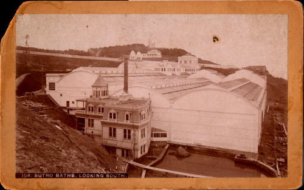

05.06.08
Posted in personal, travel at 10:52 pm by danvk
First off, apologies for the Craig- and Ryan-like pace of updates to danvk.org.
On Sunday, Ryan and I rode out to the far Western edge of San Francisco, just north of Ocean Beach. While it’s only six miles from my apartment, this felt like a much longer trip. There are no freeways in this part of the city, so our route was stop and go through neighborhood after neighborhood: Russian Hill, Nob Hill, Pac Heights, Laurel Heights, Inner Richmond and Outer Richmond.
This is the land of Adolph Sutro, a former mayor of San Francisco who I learned about from this Sparkletack episode. Sutro’s two claims to fame in this area are:

The second Cliff House, which lasted from 1896-1907. This must have been especially dramatic back then, when this area was completely uninhabited. Nowadays we’re on the third Cliff House, a swanky restaurant with spectacular views. I’d love to eat there someday, but that degree of swankiness requires a special occasion.

The remains of the Sutro baths, which Sutro once hoped would be his great legacy. It’s a shame that these public baths no longer exist. I can only imagine how nice it would be to relax here with a magnificent view of the ocean and feel the sea breeze coming in. The rocks you can see peeking out of the sea were covered in mussels, which made the waves slowly drain off them, rather than crashing. It was a sight to behold.
Here’s what the baths used to look like. I believe you can see the lack of a Cliff House in the background.

I was disappointed to find out that the baths were enclosed. While it is a spectacular building, I liked the idea of catching the sea breeze from the baths. I also find it amazing how very old these ruins look, even though the building only burned down in 1966.
Permalink
11.24.07
Posted in personal, travel at 5:25 pm by danvk
I flew Virgin America recently and, since they’re getting a lot of buzz, I figured I’d write up my experience.
First off, you have to be flying amongst San Francisco, Los Angeles, Las Vegas, New York JFK and Washington Dulles. Those are the only cities Virgin flies to. The good news, though, is that they’ll almost certainly be the cheapest option if you can use them. A cross-country ticket cost me $130 each way, though I see that their rates have recently gone up to $170.
 When I got on the plane, there was mood lighting and really energetic music. Virgin really advertises the mood lighting, but I think it’s just silly. It’s not as though the lighting turns it into a party plane (now that would be cool). Seriously, when was the last time you were bothered by the lighting on a plane?
When I got on the plane, there was mood lighting and really energetic music. Virgin really advertises the mood lighting, but I think it’s just silly. It’s not as though the lighting turns it into a party plane (now that would be cool). Seriously, when was the last time you were bothered by the lighting on a plane?
Another difference is that, instead of having a “beverage cart” go through the plane once or twice per flight, you order drinks and snacks through your in-seat computer. Non-alcoholic drinks are free, and snacks cost some small amount ($1 for cookies). You can also order a meal if you’re so inclined. This lets you get drinks when you want them (good for someone who likes to sleep on flights) and frees up the aisles.
The in-seat computer is the main difference between a Virgin flight and one on any other airline. Their very-trendy interface is called “Red (BETA)” and lets you listen to music, watch TV or movies, chat, play games, and order food, as I mentioned earlier. It must really be a beta, since it crashed on me at least once. The pilot made a friendly announcement at the start of the flight that it would “crash and need to be restarted, just like your computer at home!” I find it incredibly amusing how folksy this sounded when he said it. For what it’s worth, these things run Linux and X11. You can tell by cursor and background, but it’s most obvious when you restart and see a command line. =)
The music selection was fairly random. They picked a few popular artists from several different genres (pop, rock, hip-hop, classical) and had between maybe 7 and 15 songs from each. This led to some unusual picks. While 15 songs probably isn’t enough for the Beatles, seven is too much for a current artist like Justin Timberlake. Another oddity: songs were listed in reverse chronological order. That’s fine for JT, but it led to a really weird playlist for Bob Dylan. I was surprised to see “Tweedle Dum and Tweedle Dee” as his top song.
The full movies were $8/view, and I just don’t care that much about Shrek the Third. There were also free shorts available, but these looked thrown together at the last minute. They seemed like some sort of “best of YouTube” collection.
The games were pretty cool. I played Doom for about half an hour on my flight home. I assume it was under emulation, since it was pretty sluggish. But it was playable, and reminded me why I never got into first-person shooters as a kid. I’m terrible at them! With some more games and a larger controller, this could be a good way to pass a flight.
There was also seat-to-seat and group chat, but I didn’t see the point of this. Do I really want to chat with a random person on the plane using an undersized keyboard on the back of my remote? The person sitting next to me sure did. She was pretty into it. To each his own.
All in all, Virgin was pretty cool. It’s not worth going out of your way to get the “Virgin American experience”, but if they’re the cheapest option, the by all means, go for it!
Permalink
11.20.07
Posted in personal, travel at 11:46 pm by danvk
I had a busy week of travel last week. First there was D.C. Gras, where I met up with many college friends and some high school friends too:
They’d get links, but they have no web presence. Come on, guys!
After a great weekend in D.C., I flew back to San Francisco and then to beautiful Maui for a work-related off-site morale event:

Here’s one of my favorites, from the Haleakala National Park:
I’m staring up at a 400 foot waterfall from a nearby hill. Ryan (who has a web presence) has all his wonderful photos from the trip here.
Permalink
06.17.07
Posted in personal, travel at 12:09 am by danvk
I’ve been enjoying the Hellyer disc golf course down in San Jose of late, so I was excited to discover that it had a sister course just across the creek. When I found out there were geocaches and a bike trail in the area, it was Saturday road trip time!
Read the rest of this entry »
Permalink
06.13.07
Posted in personal, travel at 9:54 pm by danvk
Sorry Craig, not those vouchers.
United offered me a pretty sweet deal last winter: in exchange for taking a flight six hours later, they’d give me a hotel room (it was midnight), a bump to first class, and a voucher for a free round trip anywhere in the continental US.
I finally got around to claiming that voucher today. I figured I could just use it online, but that would have been far too easy. I searched around a bit and found this page, which told me to call a 1-800 number. So I went through the automated phone system until I got a human, who immediately told me that I needed to go to the airport! And so I jumped in the car for a surprise visit to the San Jose airport this morning.
The whole voucher business strikes me as the pinnacle of mindless bureaucracy. My voucher said that it was applicable to tickets of classes W, V, and Q. Huh? There’s no way to tell which is which from United’s web site. I wanted to go from San Jose to Newark, but the lady at the desk quickly ruled that out (there was only “Class H”). Then there was San Francisco to Newark, but nope, that was class H, too. Eventually she found some class Q tickets from San Francisco to New York JFK. After another fifteen minutes of fighting with the system, the tickets were mine. Ugh.
The real lesson learned here is that I should book tickets with these vouchers more than 18 days in advance of a holiday weekend. But I still came out well ahead. I got direct, non-stop flights each way and a $608.80 ticket for free.
Permalink
« Previous entries
Next Page »
{kind=link}